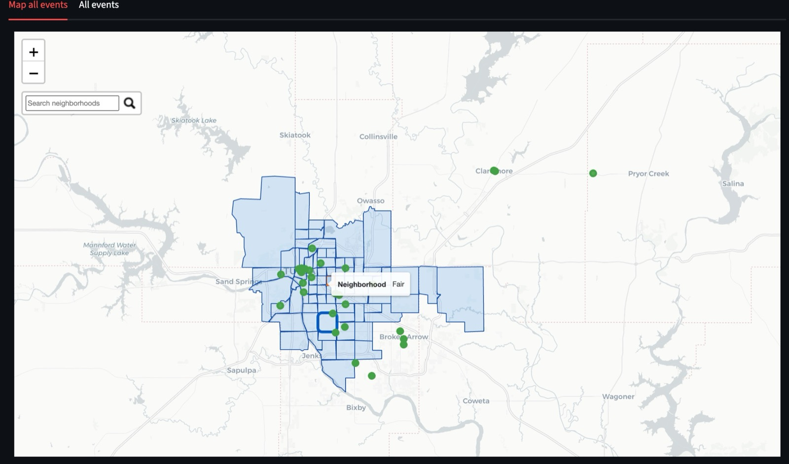
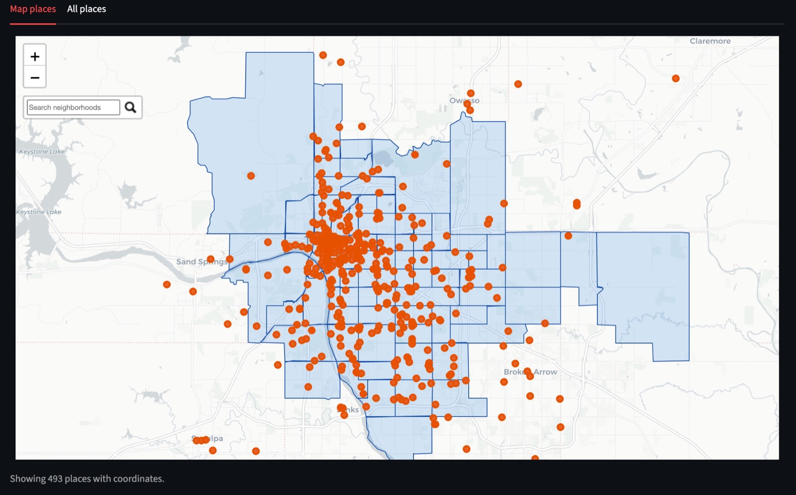

Context
The Tulsa City Auditor's Office wanted to reach residents who rarely hear from it, and to know which neighborhoods it was missing. Our brief, through NYU CUSP's City Immersion practicum, was to use data to find underserved neighborhoods and to make public engagement opportunities discoverable in one place.
Research
We integrated geospatial and demographic data to identify underserved neighborhoods across Tulsa, and worked with the office to understand how outreach was planned: which platforms staff checked, and how often.
Decisions
Every event in one place
Outreach staff were checking three platforms by hand. We built a pipeline that pulls events from Eventbrite, Facebook and LinkedIn, and geocoded 493 community venues through the Google Places API so every event lands on the map.

Five views
The app has five views: map, recommendation, demographic, social signal and chatbot. The map and places views put events and venues on the neighborhoods; the others help the office decide where to go and who it will reach there.
From research to prototype to a working app
I ran the UX end to end: user research, insights, and high-fidelity prototypes in Figma. Then we built the Streamlit app together.
Outcome
| 493 | community venues geocoded and mapped |
| 3 | event platforms pulled into one view |
| 5 | views: map, recommendation, demographic, social signal, chatbot |
We presented the tool and the findings to cross-functional city stakeholders as actionable recommendations, and delivered the final report, "Increasing the Community Outreach of the Auditor through social media and public touchpoints," on 17 December 2025.
What I would do next
A scheduled refresh of the event sources and an evaluation of the chatbot's answers. The office owns the tool now, so both would be handed over as documentation rather than built by us.